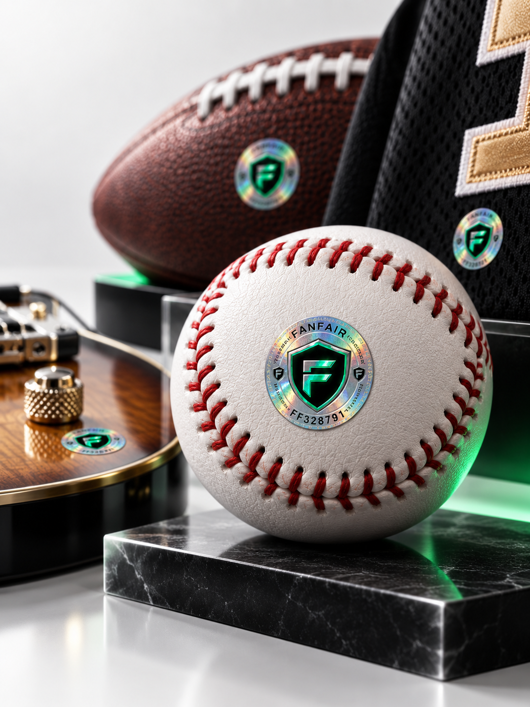
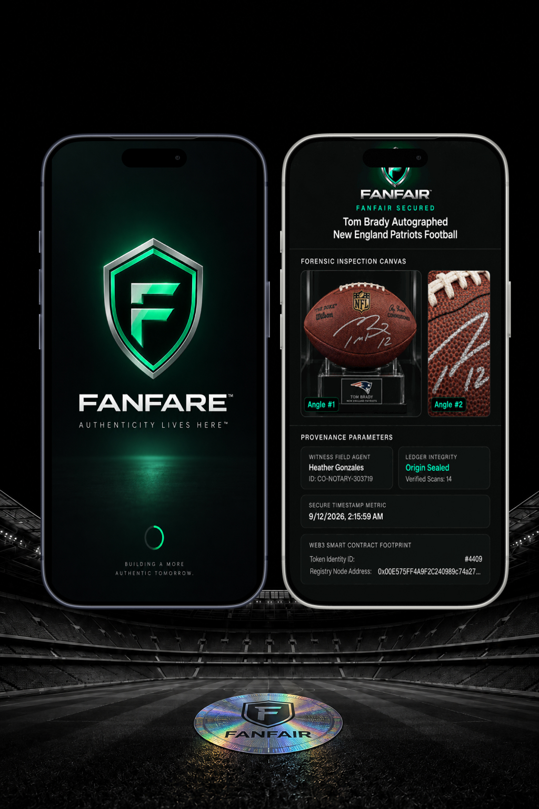

01
Tap. Verify. Trust.
Every protected Fanfair item carries a serialized, tamper-evident authentication seal connected to its digital verification record.
Sports · Music · Collectibles
Fanfair connects physical memorabilia to a secure digital identity, giving collectors, dealers, charities, and fans a simple way to verify what they own instantly.

Authenticity lives here
Fanfair creates a permanent connection between the physical item, its authentication history, identifying details, and its digital record. No searching for paperwork. No guessing. No disconnected certificates.
Every protected Fanfair item carries a serialized, tamper-evident authentication seal connected to its digital verification record.
Each collectible receives a serialized Fanfair security seal that stays with the item.
Photos, provenance, condition, and authentication evidence live in one item-specific record.
Collectors, donors, buyers, and partners can tap or scan to confirm the record in seconds.

More than a sticker
Every Fanfair seal is designed to become part of the item's identity, connecting a unique physical marker to a permanent record buyers can actually inspect.
How it works
A unique Fanfair seal is permanently assigned to the physical collectible.
Photography, identifying details, authentication information, and provenance are recorded.
A phone can instantly access the item's Fanfair verification record.
Buyers, donors, collectors, and partners can see what the item is and how it entered the registry.
See how it works
Run the demo to see how Fanfair captures item evidence, fingerprints the record, writes a ledger event, and returns a certificate buyers can inspect.
Signed game ball
Serialized seal is waiting for intake photos, condition notes, and provenance evidence.
await fanfair.ready()
// Select "Run Demo" to activate the registry workflow.Built for the entire memorabilia market
Game-used memorabilia, autographed jerseys, baseballs, footballs, basketballs, boxing gloves, guitars, music memorabilia, entertainment collectibles, and historic artifacts.
Global memorabilia market opportunity
Collectors globally
Core verticals: sports, music, collectibles
Designed for the moment of purchase
Know what you are buying. Preserve what you own. Verify it whenever you need to.
Give buyers a clearer, more professional way to verify inventory.
Give donors confidence in the memorabilia they are bidding on at the moment it matters.
Extend existing authentication into a secure physical-to-digital record.
Add a visible layer of trust to collectible transactions.
Protect officially authenticated merchandise with a persistent digital identity.
A better experience for the buyer
A collectible may move from dealer to auction house, donor to collector, collector to marketplace, or generation to generation. Its identity should move with it.
Tap the item. See the record.
Fanfair FAQ
Fanfair connects authenticated memorabilia to a secure digital record. The record can include item photography, identifiers, condition notes, verification history, and supporting documentation.
Fanfair is designed to extend authentication into a persistent physical-to-digital identity layer, preserving the evidence and making the item easier to verify later.
Qualified inventory is selected, documented, sealed, activated, and then made available for instant verification by the next bidder, buyer, collector, or donor.
Donors can inspect an item's verification record before bidding, reducing uncertainty and making the memorabilia feel more transparent and professionally protected.
Real Things. Higher Standards.